Cyberotica is an anthology of contemporary art. The book compiles recent works by over fifty artists—including Jacolby Satterwhite, Hito Steyerl, and Marguerite Humeau—to explore a prominent motif in the contemporary oeuvre: the chimera of fetish and technology.
Spanning gender politics, decolonization, and techno-utopianism, Cyberotica presents a vast narrative of identity and protest.
Tune in to a self-curated, thematically relevant study playlist.
BFA capstone, Sam Fox School of Design & Visual Arts
234 pages + covers

Cyberotica: Technology and Fetish in Contemporary Art2020
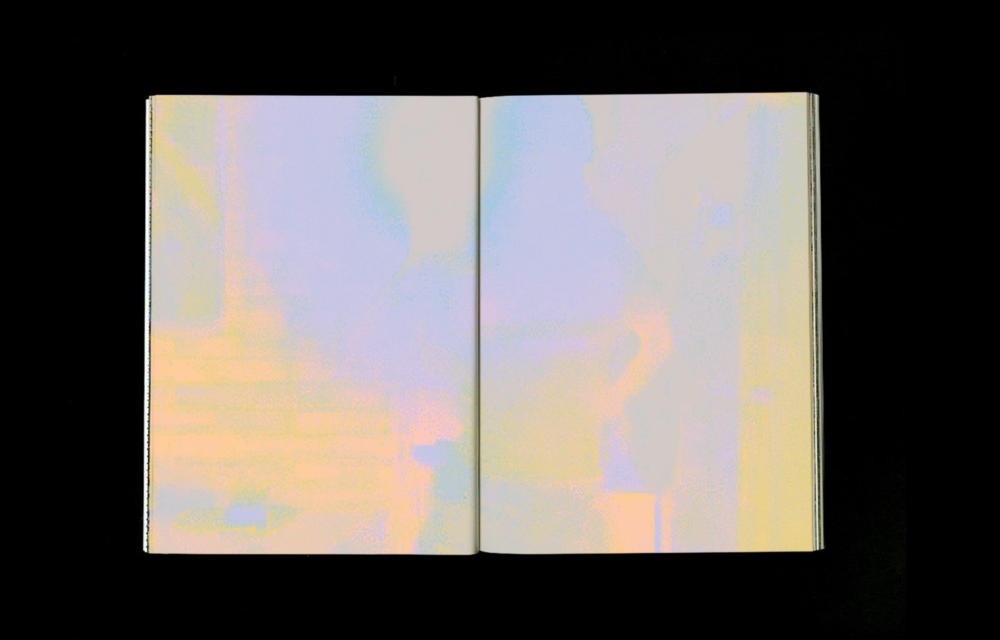
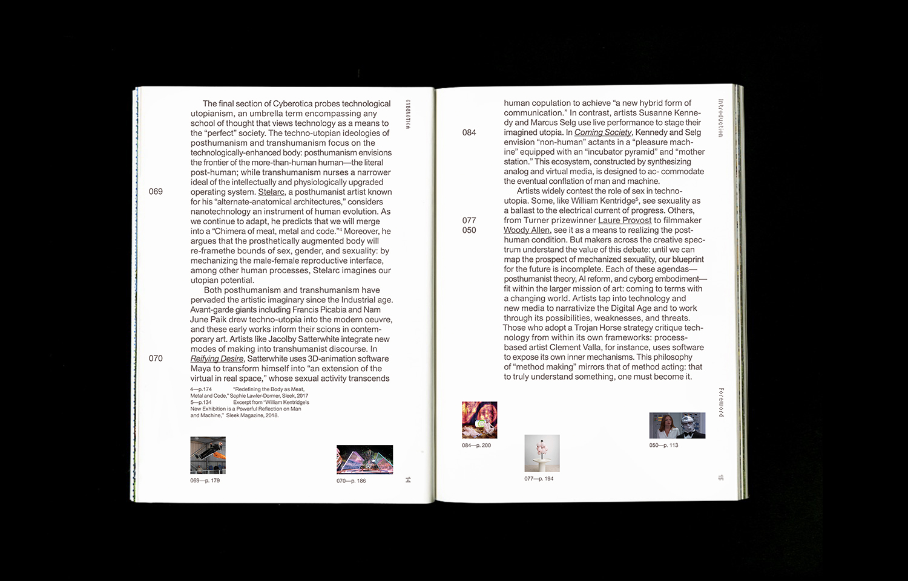


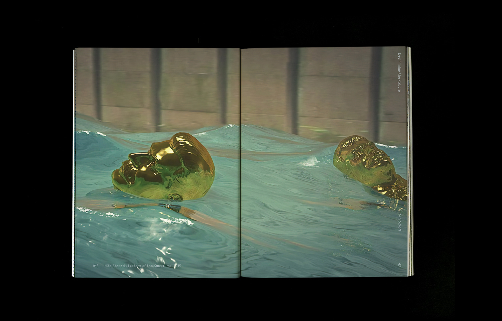
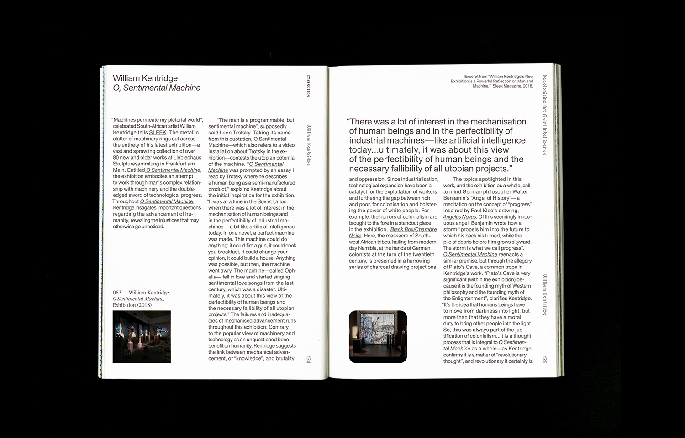
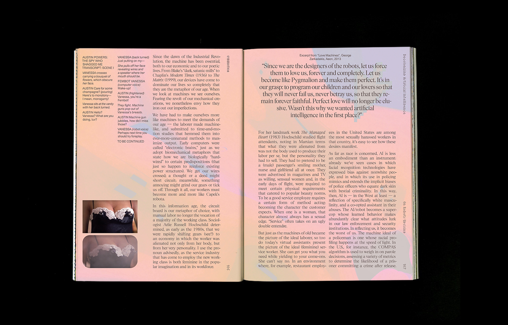
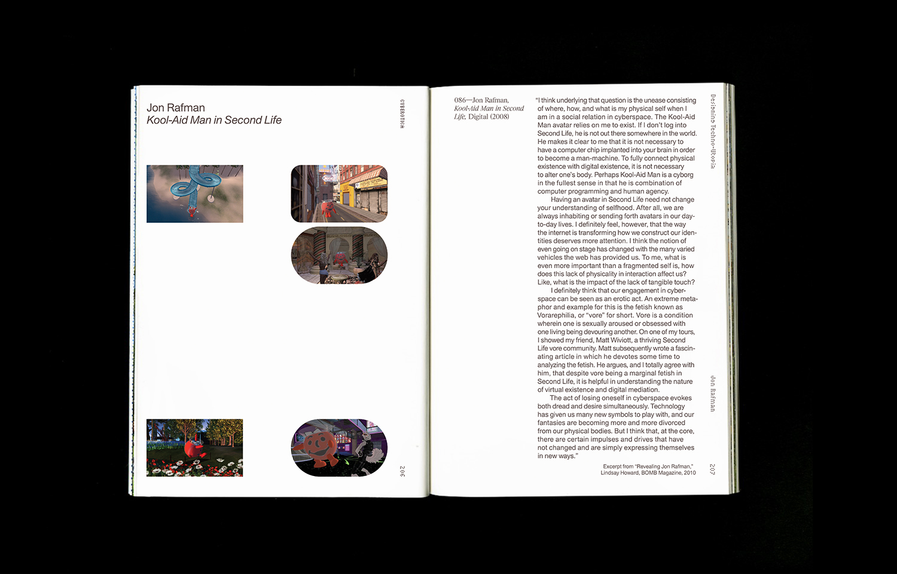
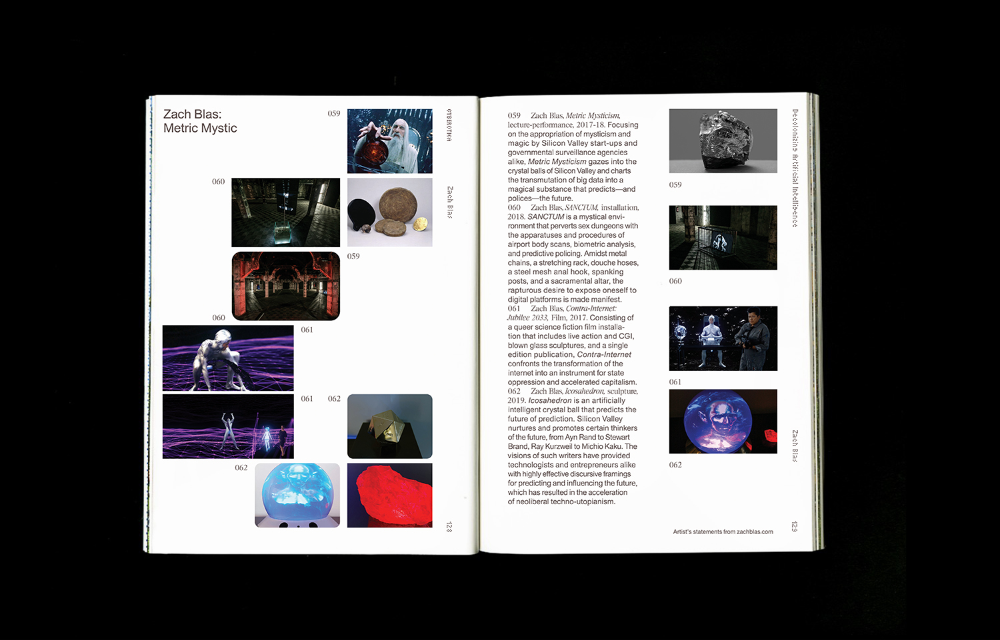
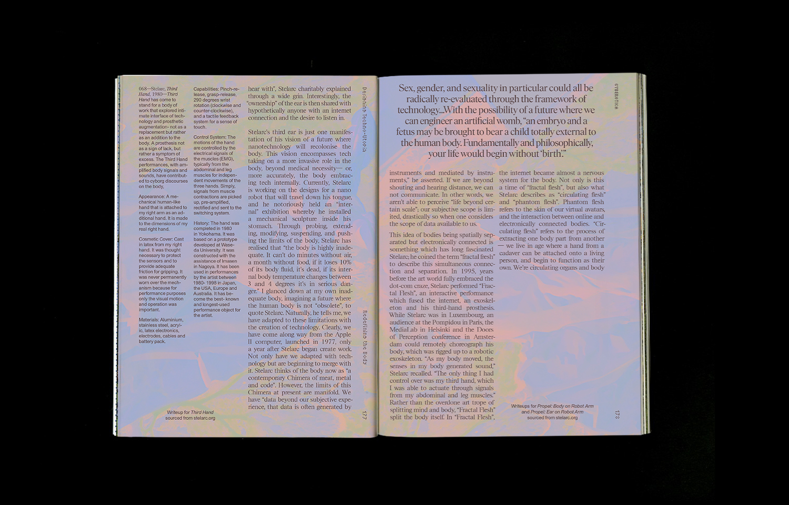
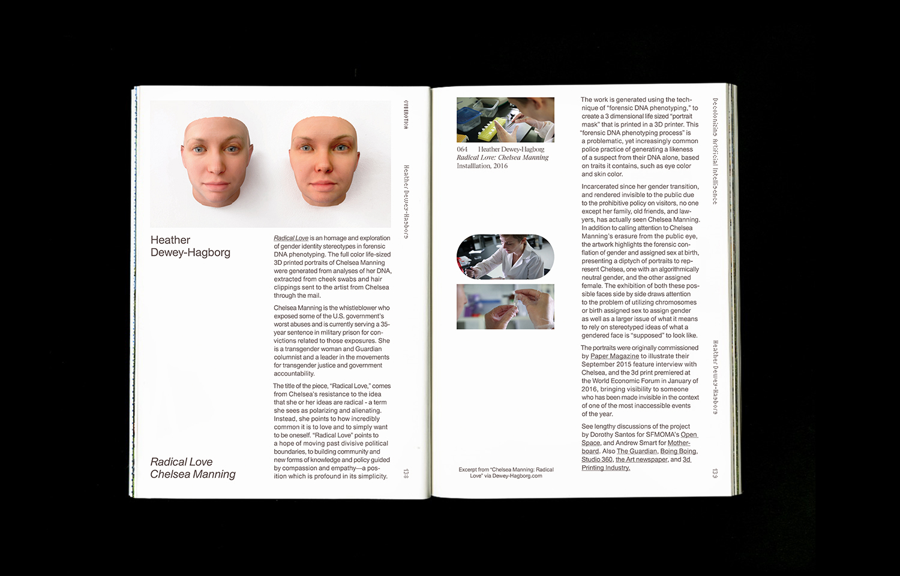
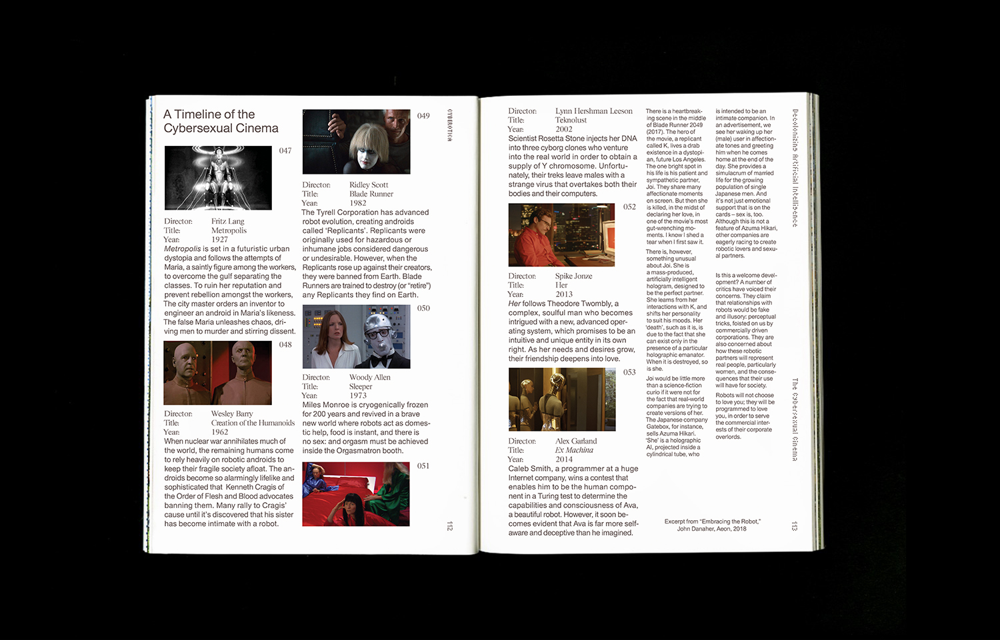
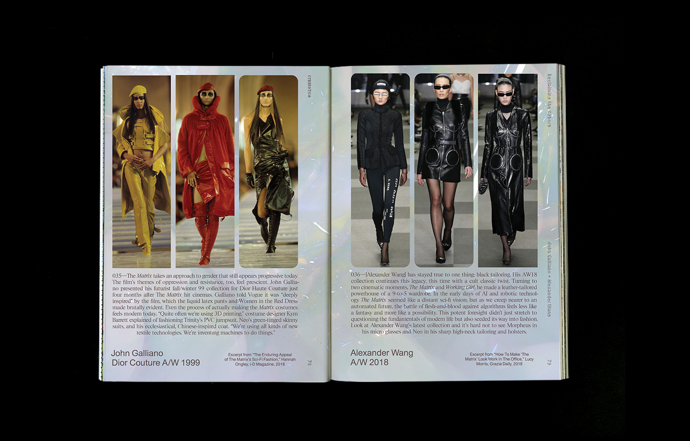
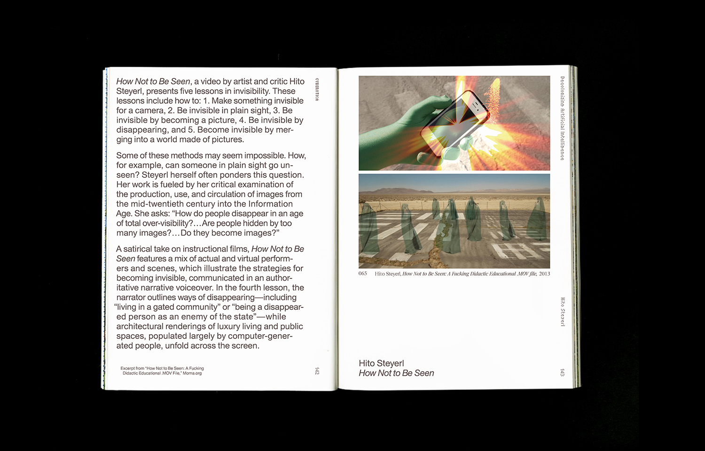
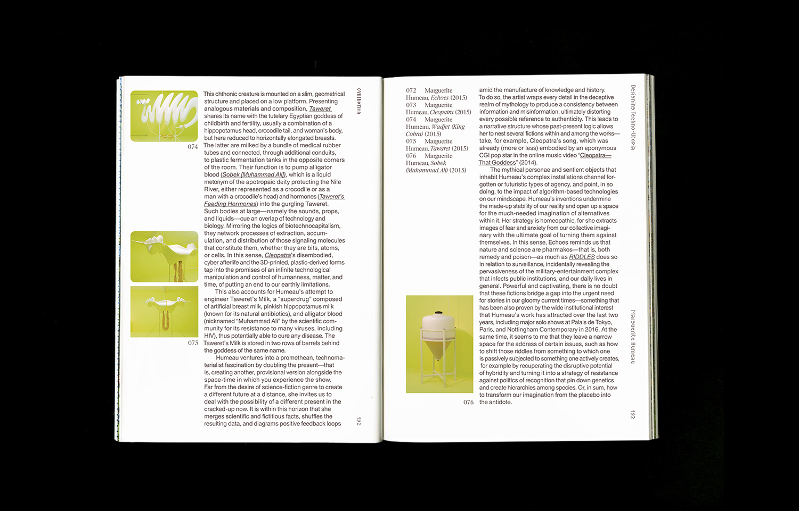
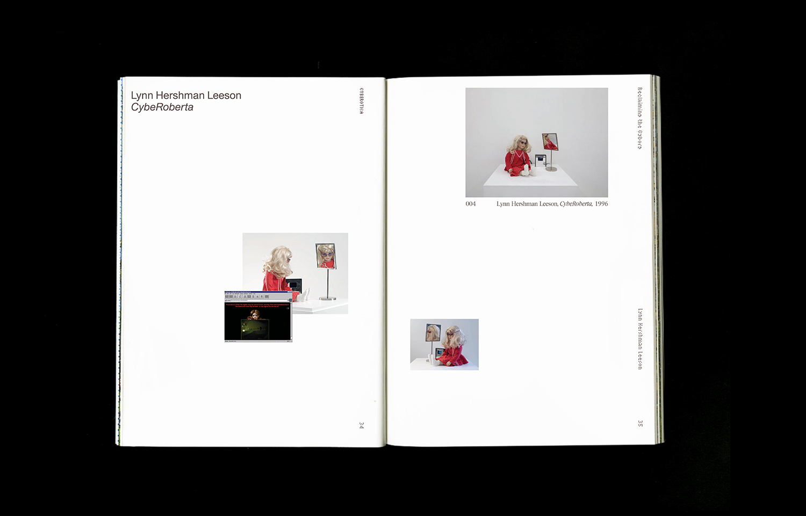
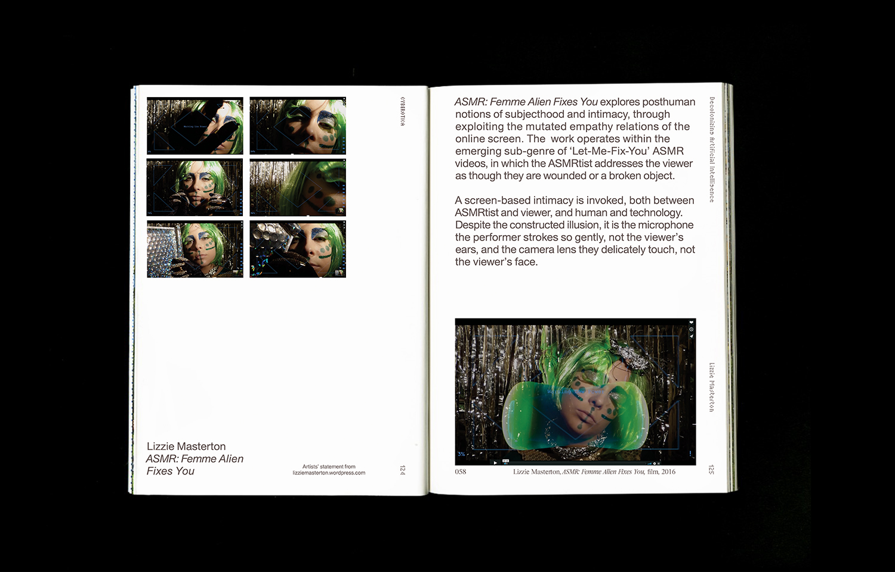
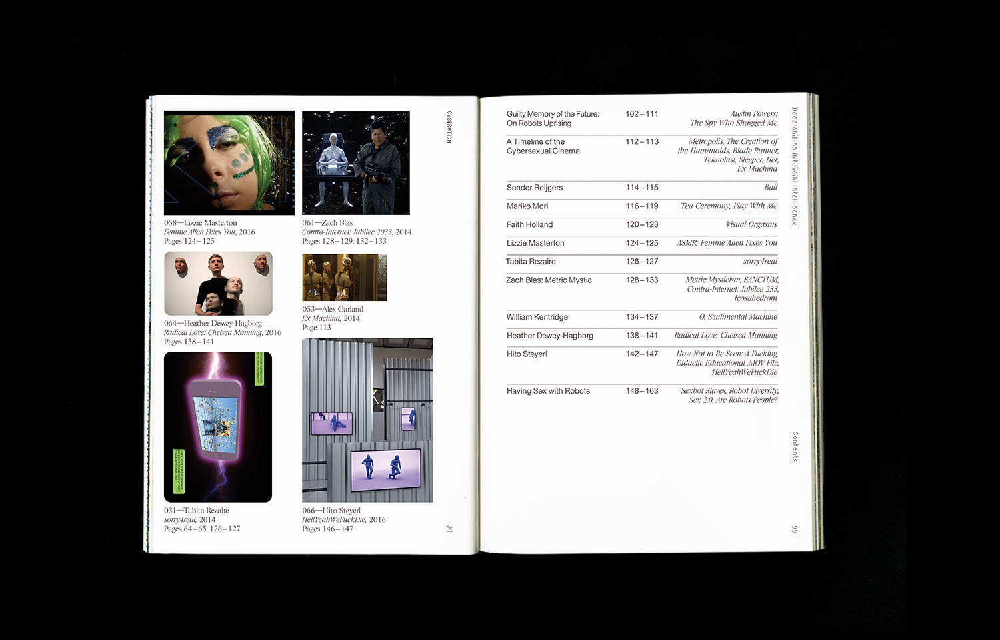